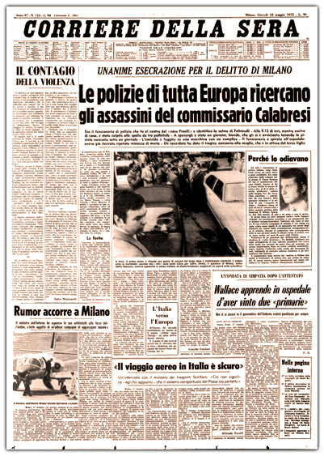

Omicidio Luigi Calabresi (17 maggio 1972)

Riproduzione digitale della prima pagina del Corriere della sera datato 18 maggio 1972 e pubblicato nell'archivio storico del giornale. L'omicio del commissario rimarrà avvolto nei dubbi nonostante i colpevoli furono individuati e processati.
Scheda Descrittiva
| Titolo | Prima pagina del Corriere della sera del 18 maggio 1972 |
|---|---|
| Identificatore | IT-CDS-19720518-001 |
| Autore / Ente | Archivio storico del Corriere della sera. |
| Data | 18 maggio 1972 |
| Luogo | Milano, via Francesco Cherubini (Vedi sulla mappa) |
| Soggetto / Tema | Omicidio Luigi Calabresi; Anni di Piombo; Lotta Continua |
| Persone Correlate | Luigi Calabresi |
Storia
L'omicidio Calabresi è il nome con cui i mass media sono soliti riferirsi all'assassinio del commissario di polizia e addetto all'ufficio politico della questura di Milano, Luigi Calabresi, avvenuto il 17 maggio 1972 dinanzi alla sua abitazione per mano di un commando di due militanti di Lotta Continua a colpi di arma da fuoco. Il commissario Calabresi era a capo delle indagini per la strage di Piazza Fontana e, tra i fermati, vi fu un esponente dei movimenti anarchici milanesi: Giuseppe Pinelli, ferroviere che lavorava nella stazione di Porta Garibaldi, assieme a Pietro Valpreda, ballerino e leader noto negli ambienti anarchici.
Pinelli fu convocato in Questura, dove andò di sua volontà per accertamenti, fu interrogato in modo estenuante e il 15 dicembre precipitò dalla finestra dell'ufficio del commissario Calabresi, morendo ore dopo all'ospedale Fatebenefratelli: Pinelli era stato trattenuto per ben tre giorni consecutivi, in evidente violazione dei limiti allora previsti dalla legge.
Su questo evento si innescò la dura polemica sulle responsabilità dell'azione investigativa e sulle responsabilità materiali degli inquirenti, incluso il sospetto di un loro intervento fisico diretto come causa della caduta di Pinelli, e il sospetto che il commissario Calabresi e il questore Marcello Guida fossero presenti nella stanza dalla cui finestra cadde l'anarchico. Luigi Calabresi dichiarò di non essere stato presente nella stanza ove avveniva l'interrogatorio di Pinelli al momento della sua caduta, in quanto chiamato a rapporto dal suo superiore. Altri cinque addetti alle forze dell'ordine, tra cui un tenente dei carabinieri e quattro addetti alla polizia, procedevano all'interrogatorio ed erano presenti nella stanza al momento della caduta: questi confermarono la loro presenza e l'assenza del commissario.
Dopo un iter processuale particolarmente travagliato solo nel 1997 si giunse a una sentenza in Corte di cassazione che condusse ad arresti e condanne definitive: questa individuò Ovidio Bompressi e Leonardo Marino (collaboratore di giustizia sulle cui parole si basò l'accusa) come esecutori materiali del delitto e Giorgio Pietrostefani e Adriano Sofri come mandanti e condannati per il reato di concorso morale in omicidio.